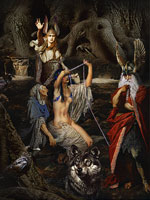

Норни, в скандинавської міфології богині долі. Першою норной була мудра стара Урд ("доля"), що читає сувій минулого. Другу звали Верданді ("становлення"); вона символізувала сьогодення. Третя, Скульд ("борг"), зберігала сувій майбутнього. Норни жили біля джерела Урд біля коріння світового дерева Иггдрасиль, яке вони щодня обприскували вологою з джерела.
Існувало повір'я, що норни лише визначали долю богів, велетнів, карликів і людей, але не могли нею розпоряджатися, хоча, траплялося, віщували нещастя. Наприклад, Урд повідала верховному богу Одіну, що йому судилося загинути в пащі жахливого вовка Фенрира в день битви Рагнарек.
Абсолютно чітко простежується паралель між норнамі, грецькими мойрами і римськими парками. Ймовірно, спочатку норни теж були пряха. Однак якщо греки і римляни вірили, що богині прядуть нитки долі певної довжини для кожного смертного, то в германо-скандинавської міфології таке уявлення про долю відсутня.